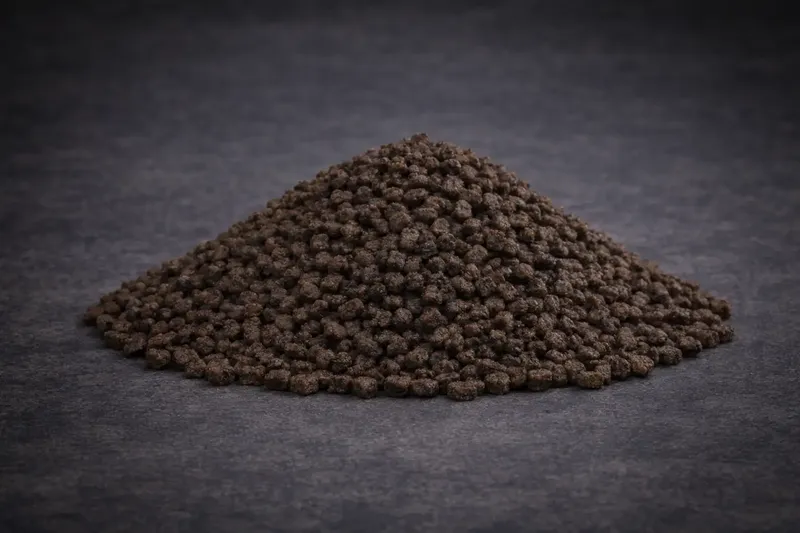

Корм для прудовой рыбы
Корм карповый, медленно тонущий РФ, 3,00 mm
Цена и наличие
- 1 кг9 BYN / шт.В наличии
- 1 кг (от 5 кг)7,5 BYN / шт.В наличии
Данные на 23.11.2026.
Характеристики
- По плавучести
- медленно тонущий
Описание
Корм для карповых рыб, изготовителем которого является АкваКорм.
Корм для карповых рыб, медленно тонущий РФ, гранула 3,00 мм предназначен для регулярного кормления карпа и других карповых рыб, содержащихся в прудах и искусственных водоемах. Размер гранулы 3 мм подходит для небольшой и подрастающей рыбы, которой удобно захватывать корм такой фракции. По мере роста рыбы можно постепенно переходить на более крупные гранулы. Главная особенность этого корма — медленно тонущая гранула. После попадания в воду корм не сразу опускается на дно, поэтому рыба успевает собирать его как у поверхности, так и в толще воды. Это особенно удобно в прудах, где рыба кормится на разной глубине. Кроме того, во время кормления проще наблюдать за активностью карпа и понимать, достаточно ли выбранной порции. Корм рекомендуется давать небольшими порциями, которые рыба успевает съесть без значительных остатков. Количество корма зависит от размера и количества рыбы, температуры воды и ее активности. Если гранулы остаются несъеденными, следующую порцию стоит уменьшить. Медленно тонущий корм для карповых рыб с гранулой 3 мм подойдет для частных прудов и рыбоводных хозяйств, где нужен удобный корм для ежедневного кормления карпа и других представителей семейства карповых.
Состав
Состав: зерновые, рыбная мука, рыбный жир, соевый белок, гемоглобин сухой, глютен пшеничный (кукурузный), БМBК, премикс, сорбент микотоксинов, антиоксидант, астаксантин, спирулина.